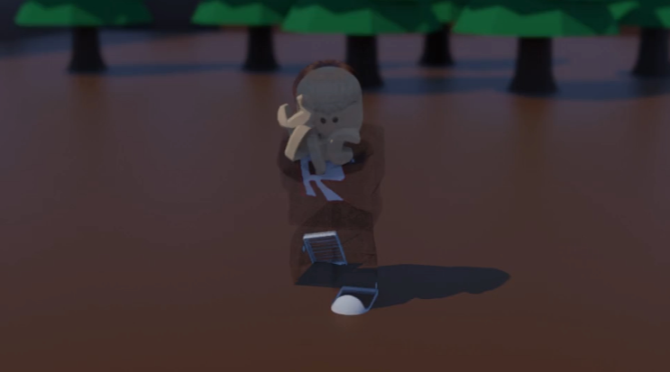

2) Blender

Blender Image

Blender Screenshot

Blender Showcase
Here I have created a quick animation for my video. While I was creating my animation I had to watch a side by side tutorial on how to make said animation. As you can see, I made an animation about a sorcerer whoose ability is to summon a beast. But you can also see that the beast did not obey his monster so he was beaten to a pulp. At the beginings of my animation I had no idea on what I would create so to practice, I made random poses with my roblox character to give me an idea on how blender worked. In the midst on working on the poses I had came up with the genius idea on making a JJS inspired animation. After I finally made the animation I sent the finish work to capcut.